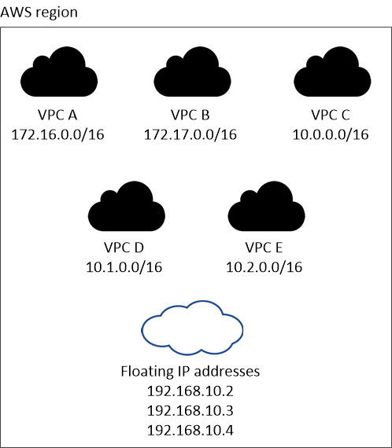

문서 변경 요청
문서 변경 요청 이 페이지 편집
이 페이지 편집 기여하는 방법 자세히 알아보기
기여하는 방법 자세히 알아보기AWS의 Cloud Volumes ONTAP에 대한 네트워킹 요구사항
기여자
Cloud Volumes ONTAP 시스템이 올바르게 작동할 수 있도록 AWS 네트워킹을 설정합니다.
Cloud Volumes ONTAP의 일반 요구 사항
AWS에서 다음 요구사항을 충족해야 합니다.
- Cloud Volumes ONTAP 노드에 대한 아웃바운드 인터넷 액세스
-
라우팅 및 방화벽 정책은 Cloud Volumes ONTAP가 AutoSupport 메시지를 전송할 수 있도록 다음 엔드포인트로 AWS HTTP/HTTPS 트래픽을 허용해야 합니다.
-
https://support.netapp.com/asupprod/post/1.0/postAsup 으로 문의하십시오
NAT 인스턴스가 있는 경우 개인 서브넷에서 인터넷으로 HTTPS 트래픽을 허용하는 인바운드 보안 그룹 규칙을 정의해야 합니다.
- HA 중재자를 위한 아웃바운드 인터넷 액세스
-
수동 옵션은 대상 서브넷에서 AWS EC2 서비스로 연결되는 NAT 게이트웨이 또는 인터페이스 VPC 엔드포인트일 수 있습니다. VPC 엔드포인트에 대한 자세한 내용은 을 참조하십시오 "AWS 문서:인터페이스 VPC 엔드포인트(AWS PrivateLink)".
- IP 주소 수입니다
-
-
단일 노드: 6 IP 주소
-
단일 AZs:15 주소의 HA 쌍
-
여러 AZs:15 또는 16 IP 주소의 HA 쌍
Cloud Manager는 단일 노드 시스템에서는 SVM 관리 LIF를 생성하지만, 단일 AZ에서는 HA 쌍이 아닙니다. 여러 AZs의 HA 쌍에서 SVM 관리 LIF를 생성할지 여부를 선택할 수 있습니다.

LIF는 물리적 포트와 연결된 IP 주소입니다. SnapCenter와 같은 관리 툴을 사용하려면 SVM 관리 LIF가 필요합니다.
-
- 보안 그룹
-
Cloud Manager에서 보안 그룹을 생성할 수 있으므로 보안 그룹을 생성할 필요가 없습니다. 직접 사용해야 하는 경우 을 참조하십시오 "보안 그룹 규칙".
- 데이터 계층화를 위해 Cloud Volumes ONTAP에서 AWS S3로 연결
-
VPC 끝점을 만들 때 Cloud Volumes ONTAP 인스턴스에 해당하는 영역, VPC 및 라우팅 테이블을 선택해야 합니다. 또한 S3 엔드포인트에 대한 트래픽을 활성화하는 아웃바운드 HTTPS 규칙을 추가하려면 보안 그룹을 수정해야 합니다. 그렇지 않으면 Cloud Volumes ONTAP에서 S3 서비스에 연결할 수 없습니다.
문제가 발생하면 을 참조하십시오 "AWS 지원 지식 센터: 게이트웨이 VPC 엔드포인트를 사용하여 S3 버킷에 연결할 수 없는 이유는 무엇입니까?"
- 다른 네트워크의 ONTAP 시스템에 대한 연결
-
AWS의 Cloud Volumes ONTAP 시스템과 다른 네트워크의 ONTAP 시스템 간에 데이터를 복제하려면 AWS VPC와 다른 네트워크(예: Azure VNET 또는 회사 네트워크) 간에 VPN 연결이 있어야 합니다. 자세한 내용은 을 참조하십시오 "AWS 설명서: AWS VPN 연결 설정".
- CIFS용 DNS 및 Active Directory
-
DNS 서버는 Active Directory 환경에 대한 이름 확인 서비스를 제공해야 합니다. Active Directory 환경에서 사용되는 DNS 서버가 아니어야 하는 기본 EC2 DNS 서버를 사용하도록 DHCP 옵션 집합을 구성할 수 있습니다.
자세한 지침은 을 참조하십시오 "AWS 설명서: AWS 클라우드의 Active Directory 도메인 서비스: 빠른 시작 참조 배포".
여러 대의 AZs에서 HA 쌍에 대한 요구 사항
추가 AWS 네트워킹 요구사항은 ZS(Multiple Availability Zones)를 사용하는 Cloud Volumes ONTAP HA 구성에 적용됩니다. Cloud Manager에 네트워킹 세부 정보를 입력해야 하므로 HA 쌍을 실행하기 전에 이러한 요구사항을 검토해야 합니다.
HA 쌍의 작동 방식을 이해하려면 를 참조하십시오 "고가용성 쌍".
- 가용성 영역
-
이 HA 구축 모델은 여러 대의 AZs를 사용하여 데이터의 고가용성을 보장합니다. 각 Cloud Volumes ONTAP 인스턴스와 중재자 인스턴스에 전용 AZ를 사용해야 하며 HA 쌍 간의 통신 채널을 제공합니다.
- NAS 데이터 및 클러스터/SVM 관리를 위한 부동 IP 주소
-
하나의 부동 IP 주소는 클러스터 관리용, 하나는 노드 1의 NFS/CIFS 데이터용으로, 다른 하나는 노드 2의 NFS/CIFS 데이터용으로 사용됩니다. SVM 관리를 위한 네 번째 유동 IP 주소는 선택 사항입니다.

Windows용 SnapDrive 또는 HA 쌍을 지원하는 SnapCenter를 사용하는 경우 SVM 관리 LIF에는 부동 IP 주소가 필요합니다. 시스템을 구축할 때 IP 주소를 지정하지 않으면 나중에 LIF를 생성할 수 있습니다. 자세한 내용은 을 참조하십시오 "Cloud Volumes ONTAP 설정". Cloud Volumes ONTAP HA 작업 환경을 생성할 때 Cloud Manager에 부동 IP 주소를 입력해야 합니다. Cloud Manager는 시스템을 시작할 때 HA 쌍에 IP 주소를 할당합니다.
부동 IP 주소는 HA 구성을 배포하는 AWS 지역의 모든 VPC에 대한 CIDR 블록 외부에 있어야 합니다. 유동 IP 주소를 해당 지역의 VPC 외부에 있는 논리적 서브넷으로 생각해 보십시오.
다음 예에서는 AWS 영역에 있는 VPC와 유동 IP 주소 간의 관계를 보여 줍니다. 부동 IP 주소는 모든 VPC에 대한 CIDR 블록 외부에 있지만 라우팅 테이블을 통해 서브넷으로 라우팅할 수 있습니다.

Cloud Manager는 VPC 외부의 클라이언트에서 iSCSI 액세스 및 NAS 액세스를 위한 정적 IP 주소를 자동으로 생성합니다. 이러한 유형의 IP 주소에 대한 요구 사항을 충족할 필요는 없습니다. - VPC 외부에서 유동 IP 액세스를 지원하는 전송 게이트웨이
-
"AWS 전송 게이트웨이를 설정합니다" HA 쌍이 상주하는 VPC 외부에서 HA 쌍의 부동 IP 주소에 액세스할 수 있도록 합니다.
- 배관 테이블
-
VPC(기본 경로 테이블)에 있는 서브넷에 대해 하나의 라우팅 테이블만 있는 경우 Cloud Manager는 해당 라우팅 테이블에 부동 IP 주소를 자동으로 추가합니다. 둘 이상의 라우트 테이블이 있는 경우 HA 쌍을 시작할 때 올바른 라우트 테이블을 선택하는 것이 매우 중요합니다. 그렇지 않으면 일부 클라이언트가 Cloud Volumes ONTAP에 액세스하지 못할 수 있습니다.
예를 들어, 서로 다른 라우팅 테이블에 연결된 두 개의 서브넷이 있을 수 있습니다. 라우트 테이블 A를 선택했지만 라우트 테이블 B는 선택하지 않은 경우, 라우트 테이블 A와 연결된 서브넷에 있는 클라이언트는 HA 쌍에 액세스할 수 있지만, 라우트 테이블 B와 연결된 서브넷에 있는 클라이언트는 액세스할 수 없습니다.
라우팅 테이블에 대한 자세한 내용은 을 참조하십시오 "AWS 설명서: 경로 테이블".
- NetApp 관리 툴에 연결
-
-
NetApp 관리 툴을 다른 VPC 및 에 구축할 수 있습니다 "AWS 전송 게이트웨이를 설정합니다". 게이트웨이를 사용하면 VPC 외부에서 클러스터 관리 인터페이스의 부동 IP 주소에 액세스할 수 있습니다.
-
NAS 클라이언트와 비슷한 라우팅 구성을 사용하여 동일한 VPC에 NetApp 관리 툴을 구축합니다.
-
HA 구성의 예
다음 이미지는 액티브-패시브 구성으로 작동하는 AWS의 최적의 HA 구성을 보여줍니다.

커넥터 요구 사항
Connector가 공용 클라우드 환경 내에서 리소스와 프로세스를 관리할 수 있도록 네트워킹을 설정합니다. 가장 중요한 단계는 다양한 엔드포인트에 대한 아웃바운드 인터넷 액세스를 보장하는 것입니다.
|
|
네트워크에서 인터넷에 대한 모든 통신에 프록시 서버를 사용하는 경우 설정 페이지에서 프록시 서버를 지정할 수 있습니다. 을 참조하십시오 "프록시 서버를 사용하도록 Connector 구성". |
대상 네트워크에 연결
커넥터를 사용하려면 Cloud Volumes ONTAP를 배포할 VPC 및 VNets에 대한 네트워크 연결이 필요합니다.
예를 들어 회사 네트워크에 커넥터를 설치하는 경우 Cloud Volumes ONTAP를 실행하는 VPC 또는 VNET에 대한 VPN 연결을 설정해야 합니다.
아웃바운드 인터넷 액세스
Connector를 사용하려면 공용 클라우드 환경 내의 리소스와 프로세스를 관리하기 위한 아웃바운드 인터넷 액세스가 필요합니다. Connector는 AWS에서 리소스를 관리할 때 다음 엔드포인트에 연결합니다.
| 엔드포인트 | 목적 |
|---|---|
AWS 서비스(amazonaws.com):
정확한 끝점은 Cloud Volumes ONTAP를 배포하는 지역에 따라 다릅니다. "자세한 내용은 AWS 설명서를 참조하십시오." |
Cloud Manager를 사용하여 AWS에서 Cloud Volumes ONTAP를 구축 및 관리할 수 있습니다. |
NetApp Cloud Central에 API 요청 |
|
https://cloud.support.netapp.com.s3.us-west-1.amazonaws.com 으로 문의하십시오 |
소프트웨어 이미지, 매니페스트 및 템플릿에 대한 액세스를 제공합니다. |
https://repo.cloud.support.netapp.com 으로 문의하십시오 |
Cloud Manager 종속성을 다운로드하는 데 사용됩니다. |
http://repo.mysql.com/ 으로 문의하십시오 |
MySQL 다운로드에 사용됩니다. |
Cloud Manager에서 매니페스트, 템플릿 및 Cloud Volumes ONTAP 업그레이드 이미지에 액세스하고 다운로드할 수 있습니다. |
|
https://cloudmanagerinfraprod.azurecr.io 으로 문의하십시오 |
Docker를 실행하는 인프라에 대한 컨테이너 구성 요소의 소프트웨어 이미지에 액세스하고 Cloud Manager와의 서비스 통합을 위한 솔루션을 제공합니다. |
https://kinesis.us-east-1.amazonaws.com 으로 문의하십시오 |
NetApp에서 감사 레코드의 데이터를 스트리밍할 수 있습니다. |
https://cloudmanager.cloud.netapp.com 으로 문의하십시오 |
Cloud Central 계정을 포함한 Cloud Manager 서비스와 통신합니다. |
https://netapp-cloud-account.auth0.com 으로 문의하십시오 |
NetApp Cloud Central과 통신하여 중앙 집중식 사용자 인증 제공 |
https://w86yt021u5.execute-api.us-east-1.amazonaws.com/production/whitelist 으로 문의하십시오 |
S3에 백업할 수 있는 허용 사용자 목록에 AWS 계정 ID를 추가하는 데 사용됩니다. |
https://support.netapp.com/aods/asupmessage https://support.netapp.com/asupprod/post/1.0/postAsup 으로 문의하십시오 |
NetApp AutoSupport과 커뮤니케이션: |
시스템 라이센스 및 지원 등록을 위해 NetApp과 커뮤니케이션 |
|
Cloud Manager에서 라이센스 생성(예: Cloud Volumes ONTAP용 FlexCache 라이센스) |
|
https://packages.cloud.google.com/yum https://github.com/NetApp/trident/releases/download/ 으로 문의하십시오 |
Cloud Volumes ONTAP 시스템을 Kubernetes 클러스터에 연결하는 데 필요합니다. 엔드포인트를 통해 NetApp Trident를 설치할 수 있습니다. |
다음과 같은 다양한 타사 위치:
타사 위치는 변경될 수 있습니다. |
업그레이드하는 동안 Cloud Manager는 타사 종속성을 위한 최신 패키지를 다운로드합니다. |
SaaS 사용자 인터페이스에서 거의 모든 작업을 수행해야 하지만 로컬 사용자 인터페이스는 Connector에서 계속 사용할 수 있습니다. 웹 브라우저를 실행하는 컴퓨터는 다음 끝점에 연결되어 있어야 합니다.
| 엔드포인트 | 목적 |
|---|---|
커넥터 호스트입니다 |
Cloud Manager 콘솔을 로드하려면 웹 브라우저에서 호스트의 IP 주소를 입력해야 합니다. 클라우드 공급자에 대한 연결에 따라 호스트에 할당된 프라이빗 IP 또는 공용 IP를 사용할 수 있습니다.
어떤 경우든 보안 그룹 규칙이 승인된 IP 또는 서브넷에서의 액세스만 허용하도록 하여 네트워크 액세스를 보호해야 합니다. |
웹 브라우저는 NetApp Cloud Central을 통해 중앙 집중식 사용자 인증을 위해 이러한 엔드포인트에 연결됩니다. |
|
https://widget.intercom.io 으로 문의하십시오 |
제품 내에서 NetApp 클라우드 전문가와 상담할 수 있는 채팅을 제공합니다. |